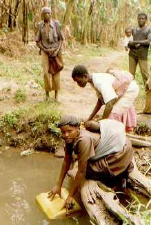

|
About Kibaale Children's Centre
In the south of Uganda, AIDS has struck hard. Ten to thirty percent of the
people are infected by HIV (reference: UNAIDS).
Because parents die of this lethal disease,
there are many orphans.
Canadian missionaries recognized
the need, and started a home for these children.
Currently about 700 children are helped. They live in extended families,
with an Uncle or other relative who volunteered to take care of the orphan.
These people are very poor. KCC makes sure the children get the basic needs,
and makes it possible for them to go to school.
|
View Larger Map
The project as seen on Google Maps
left: secondary and vocational school
circle of buildings in the middle: primary school
right lower corner: staff housing
|
|

|
The key to solving the problems in this war-suffered country is education.
We don't intend to help forever, there must come a time that they can take
care of themselves. Therefore all sponsored children attend school. At
the centre there is an example school, which gives support to teachers in and
around Kibaale. The school is supervised by Pacific Academy from Vancouver,
Canada. More information can be found on their
website.
Other children are visiting schools near their homes. Many of these
schools have very little means for education. One book for ten children. A
tiny blackboard. A roof with holes. Most of the school fees are used to
improve this. There is a teacher resource centre at KCC, where people from
other schools are helped to improve their teaching. Occasionally we help a
school with a new roof, blackboards, etc.
|
|
Medical help is also needed. There is a small clinic at the project. A
nurse takes care of the basic medical care. Serious cases are taken to a
hospital. Vaccination programs are carried out to protect the children for
contagious diseases and to prevent epidemics.
Prevention is the best help we can give. Now and then people go out to the
villages to do AIDS education. Family planning is also a subject of interest.
The parents should consider limiting the size of the family, to be able to
take better care of their children.
|

|
|

|
Water is a problem in Kibaale. There is a river, and there are several
water holes. But the water is polluted. In other areas boreholes have been
made to provide clean water. But in Kibaale the underground water contains
iron, which makes boreholes unusable without an extra filtration system.
At the project rain water harvesting is used. In the rainy season water
from the roofs is collected in big tanks. This is a good solution for
schools. We have built water tanks at several schools. But it is too
expensive for a Ugandan family. We have tried digging wells, but that
doesn't provide water of good quality.
Another method would be slow sand filtration. The river provides a steady
stream of water that can be used for this. But we lack the funds and the
knowledge to do this. Hopefully we will be able to do this some day.
|
The project is also supported by Pacific Academy.
You can find more information on their
website.
KCC works on a Christian base. Help is given to children of any
religion.
|